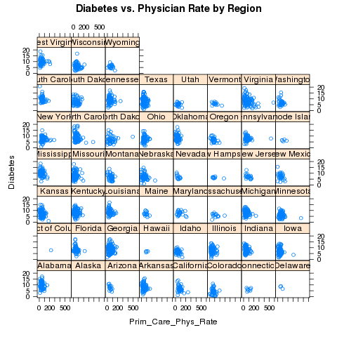
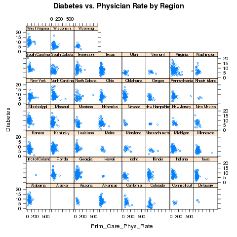
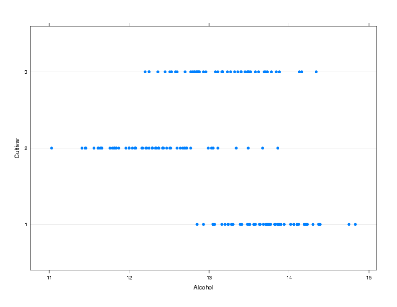
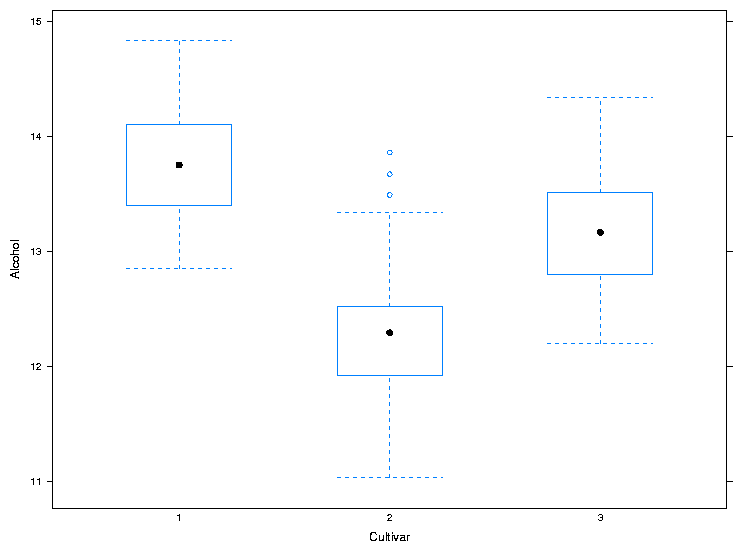
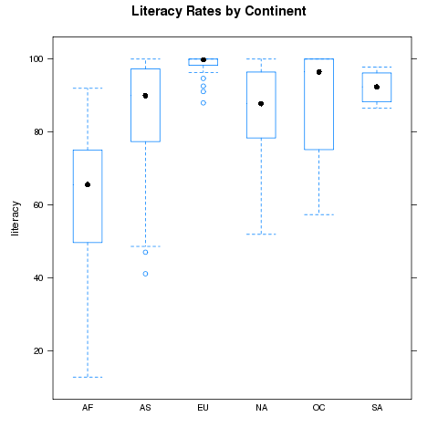
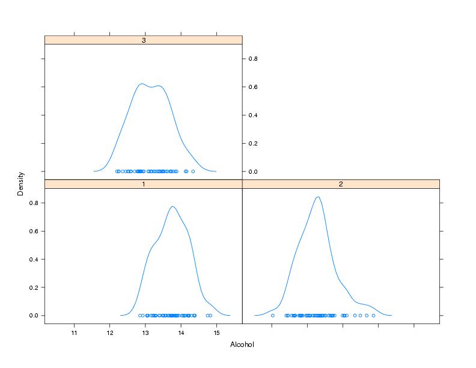
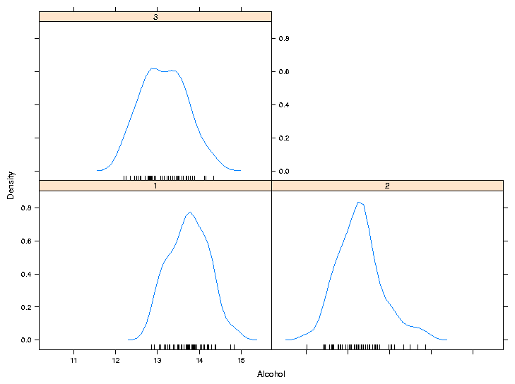
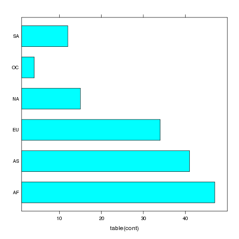
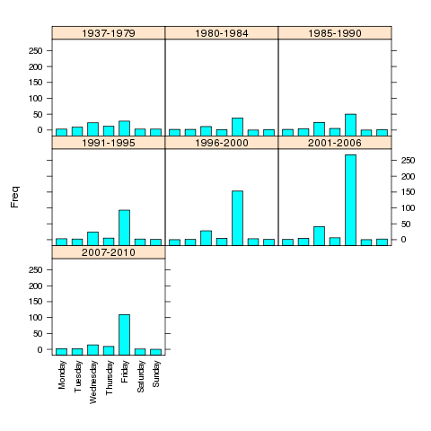
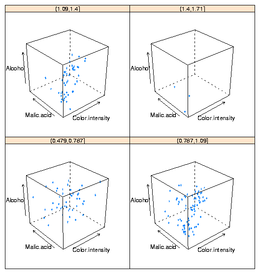

Graphics and Spreadsheets
1 Lattice Graphics
The lattice library is actually flexible enough to produce separate plots
for each state:
> xyplot(Diabetes~Prim_Care_Phys_Rate|CHSI_State_Name,data=risk,main='Diabetes vs. Physician Rate by Region')

Looking at the plot, we should make some elements of the plot
smaller, namely the titles on the strips and the points themselves:
> xyplot(Diabetes~Prim_Care_Phys_Rate|CHSI_State_Name,data=risk,main='Diabetes vs. Physician Rate by Region',cex=.5,par.strip.text=list(cex=.6))
This results in the following plot:

Finally, let's suppose that we want to break up the plots into two pages,
each with 25 plots in a 5x5 arrangement. To get exactly 50 states, we'll
use the subset= argument of the lattice functions to remove Alaska
(for which there's no data), and the layout= argument to arrange
the plots the way we want, and the page= argument to call a function
at the end of each page:
> xyplot(Diabetes~Prim_Care_Phys_Rate|CHSI_State_Name,data=risk,main='Diabetes vs. Physician Rate by Region',subset=CHSI_State_Name != 'Alaska',layout=c(5,5,2),page=readline)
You can run this example to see the two pages.
Now that we've seen some of the basics of how the lattice library routines
work, we'll take a look at some of the functions that are available. Remember
that there are usually similar alternatives available among the traditional
graphics functions, so you can think of these as additional choices that are
available, and not necessarily the only possibility for producing a particular
type of plot.
2 Univariate Displays
Univariate displays are plots that are concerned with the
distribution of a single variable,
possibly comparing the distribution among several subsamples of the
data. They are especially useful when you are first getting acquainted
with a data set, since you may be able to identify outliers or other
problems that could get masked by more complex displays or analyses.
2.1 dotplot
A simple but surprisingly useful display for small to moderate amounts of
univariate data is the dotplot. Each observation's value for a variable
is plotted as a dot along a line that spans the range of the variable's
value. In the usual case, there will be several such lines, one for each
level of a grouping variable, making it very easy to spot differences
in the variable's distribution for different groups.
To illustrate, we'll use a a data set from a wine recognition experiment where
a number of chemical and other measurements were taken on wines from three
cultivars.
The data is available at http://www.stat.berkeley.edu/classes/s133/data/wine.data; information about
the variables is at http://www.stat.berkeley.edu/classes/s133/data/wine.names
Suppose we are interested in comparing the alcohol
level of wines from the three different cultivars:
> wine = read.csv('http://www.stat.berkeley.edu/classes/s133/data/wine.data',header=FALSE)
> names(wine) = c("Cultivar", "Alcohol", "Malic.acid", "Ash", "Alkalinity.ash",
+ "Magnesium", "Phenols", "Flavanoids", "NF.phenols", "Proanthocyanins",
+ "Color.intensity","Hue","OD.Ratio","Proline")
> wine$Cultivar = factor(wine$Cultivar)
> dotplot(Cultivar~Alcohol,data=wine,ylab='Cultivar')
The plot is shown below.

2.2 bwplot
The bwplot produces box/whisker plots. Unfortunately, notched
boxplots are not currently available using bwplot. To create
a box/whisker plot of Alcohol for the three cultivars, we can use
the same formula we passed to dotplot:
> bwplot(Alcohol~Cultivar,data=wine,xlab='Cultivar',ylab='Alcohol')
The plot is shown below.

For both dotplot and bwplot, if you switch the roles of
the variables in the formula, the orientation of the plot will change. In
other words, the lines in the dotplot will be displayed vertically instead
of horizontally, and the boxplots will be displayed horizontally instead
of vertically.
As a second example, consider the literacy rates for the different continents
in the world data set. We can compare these rates using the following command:
> bwplot(literacy~cont,data=world,main='Literacy Rates by Continent')
The plot is shown below

2.3 densityplot
As its name implies, this function produces smoothed plots of densities,
similar to passing a call to the density function to the plot
function. To compare multiple groups, it's best to create a conditioning
plot:
> densityplot(~Alcohol|Cultivar,data=wine)
Notice that, for plots like this, the formula doesn't have a left hand
side. The plot is shown below:

As another example of a custom panel function, suppose we wanted to
eliminate the points that are plotted near the x-axis and replace them
with what is known as a rug - a set of tickmarks pointing up from the
x-axis that show where the observations were. In practice, many people
simply define panel functions like this on the fly. After consulting
the help pages for panel.densityplot and panel.rug,
we could replace the points
with a rug as follows:
> densityplot(~Alcohol|Cultivar,data=wine,panel=function(x,...){
+ panel.densityplot(x,plot.points=FALSE)
+ panel.rug(x=x)
+ })
Of course, if you find it easier or more convenient to define a custom
panel function separate from the call to the plotting function, you can
use that method. Here's the result:

3 barchart
A bar chart is like a histogram for categorical data. The barchart
function expects its input data frame to already have the numbers of
observations for each grouping tabulated. For the simplest case of a single
variable with no conditioning variable, you can use a call to table
on the right hand side of the tilda to produce a vertical bar chart:
> barchart(~table(cont),data=world)
The plot is shown below.

For more complex barcharts, a data frame containing the counts to be plotted
needs to be constructed. This can be done easily using the table
in conjunction with as.data.frame. To illustrate, we'll return to
the movies data set which has the release dates and box office receipts for
some of the all-time most popular movies. Suppose we want to see if the
distribution of the day of the week the movies opened on has changed over
time. First, we'll read the data and create a grouping variable for different
time periods:
> movies = read.delim('http://www.stat.berkeley.edu/classes/s133/data/movies.txt',as.is=TRUE,sep='|')
> movies$box = as.numeric(sub('\\$','',movies$box))
> movies$date = as.Date(movies$date,'%B %d, %Y')
> movies$year = as.numeric(format(movies$date,'%Y'))
> movies$weekday = factor(weekdays(movies$date),
+ levels=c('Monday','Tuesday','Wednesday','Thursday','Friday','Saturday','Sunday'))
> movies$yrgrp = cut(movies$year,c(1936,1980,1985,1990,1995,2000,2006,2011),
+ labels=c('1937-1979','1980-1984','1985-1990','1991-1995','1996-2000','2001-2006','2007-2010'))
> counts = as.data.frame(table(yrgrp=movies$yrgrp,weekday=movies$weekday))
> barchart(Freq~weekday|yrgrp,data=counts,scales=list(x=list(rot=90)),as.table=TRUE)
The plot is shown below.

If the roles of Freq and weekday were reversed in the
previous call to barchart, the bars would be drawn horizontally
instead of vertically.
4 3-D Plots: cloud
The three-dimensional analog of the two-dimensional xyplot in the
lattice library is cloud. By using a conditioning variable,
cloud can allow us to consider the relationship of four variables
at once. To illustrate, here's conditioning plot showing the relationship
among four variables from the wine data frame:
cloud(Alcohol ~ Color.intensity + Malic.acid|cut(Hue,4),data=wine)
The plot is shown below:

One important point about lattice graphics is that they operate slightly
differently from R's traditional graphics. When you type a lattice
command at the top level R session, it's R's automatic printing that
actually displays the plot. So if you're calling a lattice function
in a function or source file, you'll need to surround the call with a
call to the print function, or store the result of the lattice
plot in a variable, and print that variable.
5 Spreadsheets
Spreadsheets, in particular the "xls" format used by Microsoft Excel, are
one of the most common (if not the most common) methods for transfering
data from one organization to another. When you download or receive a
spreadsheet, it's often a good idea to make sure that it really is a
spreadsheet. Comma-separated files, which are easily read into spreadsheet
programs, are often erroneously labeled "spreadsheets" or "Excel files",
and may even have an incorrect extension of ".xls".
In addition, Excel spreadsheets are often used to hold largely textual
information, so simply finding a spreadsheet that appears to contain data
can be misleading.
Furthermore, many
systems are configured to use a spreadsheet program to automatically open
files with an extension of ".csv", further adding to the confusion.
For many years, the only reliable way to read an Excel spreadsheet was with
Microsoft Excel, which is only available on Windows and Mac OS computers;
users on UNIX were left with no option other than finding a different computer.
In the last few years, a number of programs, notably gnumeric and
OpenOffice.org (usually
available through the ooffice command)
have been developed through careful reverse engineering to allow Unix users
the ability to work with these files.
To insure its advantage in the marketplace, Microsoft doesn't publish a
detailed description of exactly how it creates its spreadsheet files. There
are often "secret" ways of doing things that are only known to the
developers within Microsoft.
Reverse engineering means looking at the way a program handles different
kinds of files, and then trying to write a program that imitates what
the other program does.
The end result of all this is that there are several ways
to get the data from spreadsheet files into R.
Spreadsheets are organized as a collection of one or more sheets, stored in
a single file. Each of the sheets represents a rectangular display of rows
and columns, not unlike a data frame. Unfortunately, people often embed
text, graphics and pictures into spreadsheets, so it's not a good idea to
assume that a spreadsheet has the consistent structure of a data frame or
matrix, even if portions of it do appear to have that structure. In addition,
spreadsheets often have a large amount of header information (more than just
a list of variable names), sometimes making it challenging to figure out
the correct variable names to use for the different columns in the spreadsheet.
Our main concern will be in getting the information from the spreadsheet into
R:
we won't look at how to work with data within Excel.
If you are simply working with a single Excel spreadsheet, the easiest way
to get it into R is to open the spreadsheet with any compatible program, go
to the File menu, and select Save As. When the file selector dialog appears,
notice that you will be given an option of different file format choices,
usually through a drop down menu. Choose something like "Tab delimited text",
or "CSV (Comma separated values)". If any of the fields in the spreadsheet
contain commas, tab delimited is a better choice, but generally it doesn't
matter which one you use. Now, the file is (more or less) ready to
be read into R, using read.csv or read.delim. A very common
occurence is for fields stored in a spreadsheet to contain either single
or double quotes, in which case the quote= argument can be used to
make sure R understands what you want. Spreadsheets often arrange their
data so that there are a different number of valid entries on different lines,
which will confuse read.table; the fill= argument may be of
use in these cases. Finally, as mentioned previously, there are often multiple
descriptive lines of text at the top of a spreadsheet, so some experimentation
with the skip= argument to read.table may be necessary.
Alternatively, you can simply delete those lines from the file into which
you save the tab- or comma-delimited data.
As you can see, this is a somewhat time-consuming process which needs to be
customized for each spreadsheet. It's further complicated by the fact that
it only handles one sheet of a multi-sheet spreadsheet; in those cases the
process would need to be repeated for each sheet. If you need to read a
number of spreadsheets, especially ones where you need to access the data from
more than one sheet, you need to use a more programmable solution.
R provides several methods to read spreadsheets without having to save them as
tab- or comma-delimited files. The first is the read.xls function
in the gdata library. This function uses a Perl program (included
as part of the library), that converts the spreadsheet to a comma-separated
file, and then uses read.csv to convert it to a data frame.
In order for this library to work, perl must also be installed on
the computer that's running R. perl will be installed on virtually any
Unix-based computer (including Mac OSX), but will most likely not be on
most Windows computers (although once perl is installed on a Windows system, the
read.xls function will work with no problems). However there
is a Windows-only package , xlsReadWrite, available from CRAN
which can both read and write Excel files. (On other platforms, the
dataframes2xls package provides a write.xls function.)
Another method utilizes a facility known as ODBC (Open DataBase Connectivity),
which is a method that allows different programs that handle data to communicate
with each other. The ODBC interface uses a query language known as SQL, which
we'll study later, so for now I'll just describe the use of read.xls.
(Remember, for just one or two data tables from a spreadsheet, saving as a
tab- or comma-delimited
file and using the correct read.table variant will usually be the
easiest route. )
Since read.xls does nothing more than convert the spreadsheet to
comma-separated form and then call read.csv, the guidelines for
using it are very similar to the normal use of read.csv. The
most useful feature of read.xls is that it accepts an optional
sheet= argument, allowing multiple sheets from a spreadsheet file to
be automatically read.
File translated from
TEX
by
TTH,
version 3.67.
On 6 Mar 2011, 22:47.